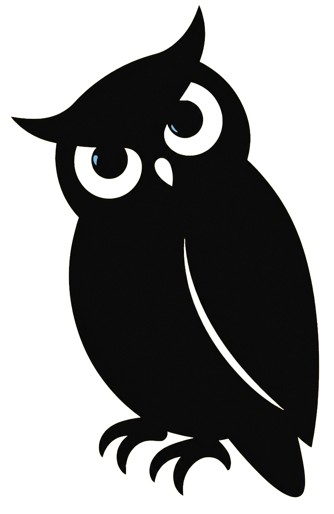

Engineer-minded enterprise seller. Built markets for technical products.

I work best at the intersection of technical products, new market expansion, and ambitious teams.
I was born in Chicago and started my career in mechanical engineering and manufacturing, where I learned to think in systems, constraints, and root causes. That foundation eventually pulled me to San Francisco, where I discovered learning to help technical teams and business leaders understand each other.
In 2017, I joined the early team at Confluent, then moved to Sydney 🇦🇺 to help build and grow the APAC market. Over the next seven years, I worked across Australia’s enterprise landscape, helping customers adopt complex data infrastructure, testing, and software delivery platforms.
The common thread has been simple: understand technical products, simplify complexity, and help customers turn engineering capability into meaningful adoption and business value.
I’m now focused on AI infrastructure, data systems, and technical products with strong engineering cultures as I return to San Francisco.
Check out Where I've Been.
I like understanding how things actually work, whether it is a technical architecture, a customer organization, or a go-to-market motion.
I have spent a lot of my career helping technical companies establish and grow in new markets, especially across APAC.
I’m comfortable with engineering teams, but I care most about turning technical value into something customers can understand and act on.
Outside the field, I’m usually tinkering with systems: designing 3D parts in Fusion 360, optimizing my home NAS environment, learning GMRS radio, running along the coast, cooking, or practicing breathwork.